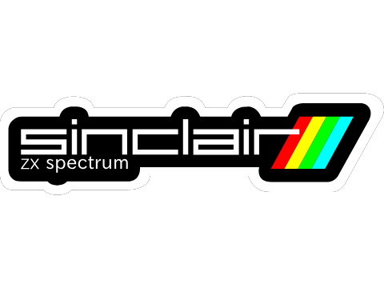

Equipo
Sinclair ZX Spectrum +128

Contacto
Contact Us

Microprocesador Zilog Z80A a 3,5 MHz (bus de datos de 8 bits y bus de direcciones de 16 bits). Acompañando al procesador principal estaba la ULA (Uncommitted Logic Array), encargada de realizar funciones auxiliares.
Dos configuraciones de RAM con 16 kB o 48 kB. Es interesante señalar que, contrariamente a lo que el marketing podría haber recomendado, no se incluían los 16 kB de ROM de cada máquina. Así, la memoria total de ambos modelos era realmente de 32 y 64 kB.
Estos 16 kB de ROM incluían un intérprete del lenguaje BASIC SINCLAIR desarrollado por la compañía Nine Tiles Ltd. para Sinclair y que era una evolución del que ya desarrollaran para dos anteriores máquinas comerciales de la marca, el ZX80 y el ZX81
Teclado de caucho integrado en el ordenador en el modelo de 16 kB y en la primera versión de 48 kB. El teclado de caucho original oprimía dos membranas con pistas conductoras que servían para detectar la presión. ZX Spectrum
El hardware fue diseñado por Richard Altwasser y la carcasa y apariencia es un diseño de Rick Dickinson. El software (firmware de la ROM), así como el profuso manual de instrucciones fue obra de Steve Vickers. Todos ellos habían participado en el diseño de los modelos anteriores de Sinclair, el ZX80 y el ZX81. En abril de 1982 aparecieron dos modelos: uno con 16 Kb a un precio de 125 libras (ampliable a 48 Kb por 60 libras) y otro con 48 Kb de fábrica por 175 libras. Con la salida de imagen en color y con un sonido muy aceptable, destacaba su pequeño tamaño y su teclado con teclas de goma dura que mantenía la tradicional forma de los modelos anteriores de presentar palabras completas con pulsaciones. Con un precio tan ajustado, sobre todo comparado con los modelos de la competencia en el momento, los pedidos se dispararon y Sinclair y la empresa ensambladora de la máquina, Timex, no daban abasto. En julio de 1982 ya había 30 000 pedidos pendientes de atender y a finales de agosto (debido a las vacaciones de verano de la plantilla que fueron escrupulosamente respetadas) ya eran 40.000 pedidos retrasados con la consiguiente molestia de muchos compradores. El propio Clive Sinclair hizo una disculpa pública en los medios de comunicación y se comprometió a tener los pedidos entregados en septiembre de ese mismo año, cosa que cumplió.1 En marzo de 1983 ya se habían vendido más de 200.000 unidades del ZX-Spectrum,2 y el mercado de los videojuegos domésticos se había convertido en un rentable fenómeno a nivel mundial. Sinclair Research Ltd. se convirtió en apenas unos meses en una de las compañías del sector más sólidas y con más valor del momento. El precio de sus máquinas descendió hasta 99,95 libras para el ZX-Spectrum de 16 Kb, 129,95 libras para el ZX-Spectrum 48 Kb y 39,95 libras para el anterior modelo, el ZX81. En 1981, Altwasser y Vickers se desvincularon de Sinclair para formar su propia compañía, a la cual llamarían Jupiter Cantab (una abreviatura de Cantabridgian). Allí lanzaron al mercado una máquina de idéntica arquitectura a la empleada en la compañía de la que salían, el Jupiter Ace, que sin embargo no tuvo prácticamente repercusión (apenas se comercializaron unas 5000 unidades3).
Sinclair ZX Spectrum +128
Contact Us